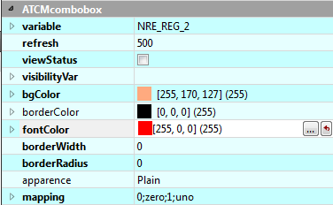

Lorsque vous sélectionnez l'élément, ses propriétés apparaissent dans la fenêtre inférieure droite de la fenêtre Qtcreator dans la section intitulée ATCMcombobox. En modifiant une ou plusieurs de ces propriétés, vous pouvez personnaliser l'aspect graphique et certaines fonctions. Pour effectuer la modification, sélectionnez la colonne de droite de la ligne correspondante.

En détail pour les fonctionnalités seront disponibles:
variable: pour définir la variable de la Crosstable de destination sur laquelle écrire la valeur courante de la combobox, il faudra insérer le nom de la variable de destination.
refresh: temps de rafraîchissement de l'objet exprimé en millisecondes.
viewStatus: s'il est coché, il y aura une couleur rouge ou verte, selon que le réglage de la variable statusvar a échoué ou non et si la bordure est visible.
visibilityVar: si vous voulez lier la visibilité ou non de l'objet en fonction de l'état d'une variable, vous devez saisir le nom de la variable destination.
mapping: contient le mappage des valeurs assumées par la combobox comme expliqué précédemment.
En détail pour l'aspect graphique sera disponible:
bgColor: détermine la couleur de fond de l'objet.
borderColor: détermine la couleur du bord de l'objet, uniquement si l'épaisseur du bord est supérieure à zéro.
fontColor: détermine la couleur du texte de l'objet.
borderWidth: est l'épaisseur en pixels du bord de l'objet.
borderRadius: est le rayon de courbure des bords de l'objet.
apparence: c'est le style avec lequel vous voulez montrer l'objet.
,NOTE: dans toutes les propriétés, à l'exception des ATCMplugins, il est possible d'afficher le “Context Help” de Qt pour avoir une description du fonctionnement: sélectionnez la ligne souhaitée et appuyez sur la touche “F1” du clavier.
Pour utiliser les propriétés de l'objet par code, tapez dans Help→Index: QComboBox